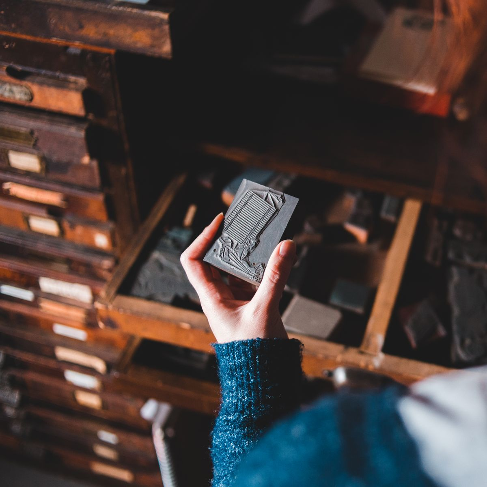

Hendrik Valk, punchcutter
Nineteen, with a file in his hand
Hendrik Valk was apprenticed at nineteen to a master punchcutter of the Haarlem trade — a man who had cut steel for forty years and who taught the way the trade has always taught: a blank, a file, a smoke proof, and no praise until the letter stood up on the paper. The apprenticeship lasted five years. Most of the first year was spent learning to sharpen a graver and to see.
Nine years at a Dutch type foundry followed, at the caster rather than the bench: feeding the machine, dressing type, learning what metal does at temperature and what a fount owes a printer. In 2016 he opened his own bench in a former stable off the Spaarne river, with one hand mould, one hand-fed caster, and a drawer of his master's gravers.
What he knows of the file he learned from his master, and says so. What he knows of metal he learned at the caster. The rest — which is most of it — the proofs taught him, one smoked sheet at a time. The foundry is one man, one bench and a queue; that is the whole firm, and the catalogue is written to match.

How type runs
Five stages, in the order the bench does them. Nothing here is automated away, and nothing is dressed up: this is the whole process, at practice level.
The Punch
A steel blank is cut in reverse with gravers and files, counters sunk with counterpunches, until the letter stands in relief — days per character.
The Matrix
The punch is smoked, proved, corrected, then struck into copper and justified, so every sort it makes stands on the same body.
The Cast
Type metal is poured in the hand mould for display sizes, or cast on the hand-fed caster for text — sort after sort, at temperature.
The Dress
Each sort is rubbed, grooved and checked for height-to-paper, then sorted into the case to the printed bill of type.
The Proof
A page is set and pulled before any order is cast in full. If the proof is wrong, the casting does not begin — the proof is the contract.
Hand work, machine work, and the metal itself
Hand-cut means hand-cut. Where a machine does part of the work, the machine is named. Both kinds of making are legitimate; hiding either is not.
| Product | The cutting | The casting |
|---|---|---|
| Valk Text | Hand — every punch | Hand-fed caster (text sizes); hand mould (display sizes) |
| Spaarne Display | Hand — every punch cut so far | Hand mould |
| Staal Roman (revival) | 11 characters re-cut by hand; the rest struck from surviving matrices | Hand-fed caster |
| Punchcutting commissions | Hand only — that is the commission | Not cast — masters and proofs only |
A pantograph and a milling machine do honest work in this trade, and other founders use them. This bench does not — but the point of this table is not the bench's virtue. It is that the making is printed, whichever way it is done, so a buyer always knows what their money bought.
The metal, stated plainly
Type metal is an alloy of lead, tin and antimony. It is a good servant and a poor souvenir. In this workshop it is handled as the trade handles it: gloves at the pot, extraction over the caster, no food or drink in the casting room, and hands washed before eating. Every crate of type leaves with a handling note in the lid — wash your hands after handling type, keep it from children, and remember that a fount is a working material, not an ornament. The foundry prints this because a seller of lead owes the buyer the sentence, not just the sorts.
On what basis work is taken
- 1
Production states govern. A face can be ordered only in the sizes and character classes its catalogue entry prints as existing. In-progress faces are sold in their printed state — Spaarne as a capitals fount — and never as a promise of the finished face.
- 2
The proof comes first. Every casting order is proved on paper and the proof approved before the fount is cast. The proof pull is included in the casting rate.
- 3
Deposit and queue. Half the estimate on orders over €500, the balance before the crate leaves. Casting runs four to eight weeks from the approved proof, by queue; the queue is stated on the enquiry page.
- 4
Carriage by weight. Type is heavy and travels as crated freight, charged at cost and shown as its own line — never folded silently into the casting.
- 5
Commissions. Two punchcutting commissions a year. The design remains the client's; the foundry is credited for the cutting and claims nothing beyond it.